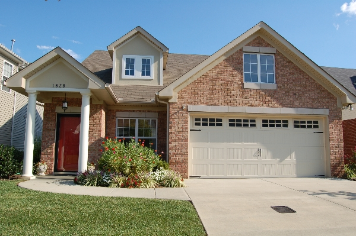

At Rochford Realty and Construction Company, we understand the part your home plays in your quality of life, and we are dedicated to providing our customers the finest homes at the greatest value.
Because we understand that your home provides the setting for some of life's most treasured moments, we build every home with the same strict attention to detail and quality. Because we know your community affects the way your live your life, we have developed communities built on old-fashioned models, with quiet streets for walks and bicycle rides, pleasant lighting and wide sidewalks for evening strolls, and plenty of green space. Because we are committed to Middle Tennessee, our home, we make sure our homes and developments are enrichments to the surrounding neighborhoods, complementing their styles and traditions.
Continuing our commitment to your quality of life, we have become the area's leading builder of communities for Active Adult and Independent Senior Living, making sure that our customers are able to live actively, comfortably, and enjoyably through the different stages of their lives. We have created homes and communities for mature adults that address their unique needs but are as exciting, comfortable, and attractive as every new home we build.We hope you will take the time to visit some of our projects and see for yourself what we mean by Building Tradition Today: blending old-fashioned value and architectural beauty with modern convenience and exemplary customer service.

